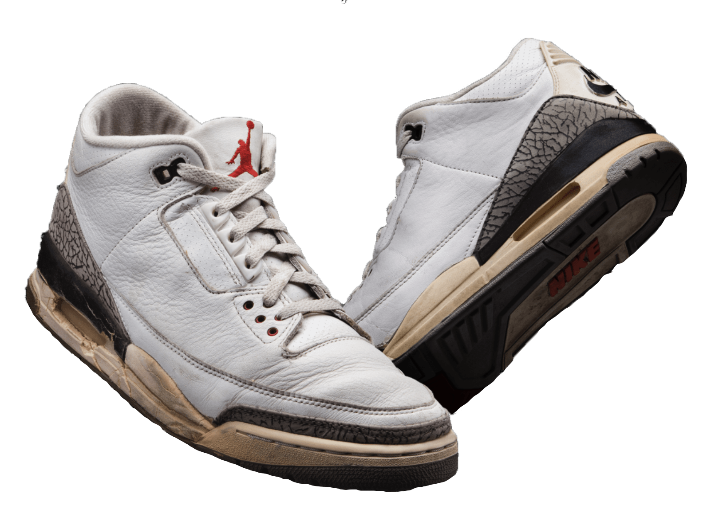
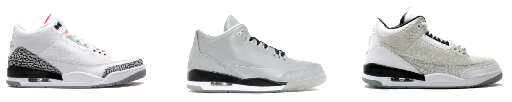
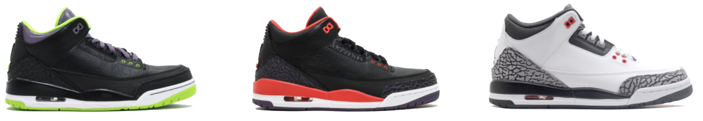
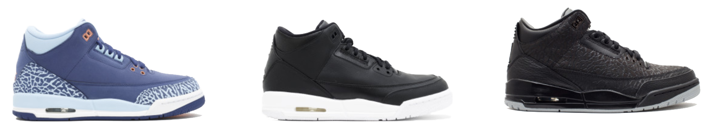
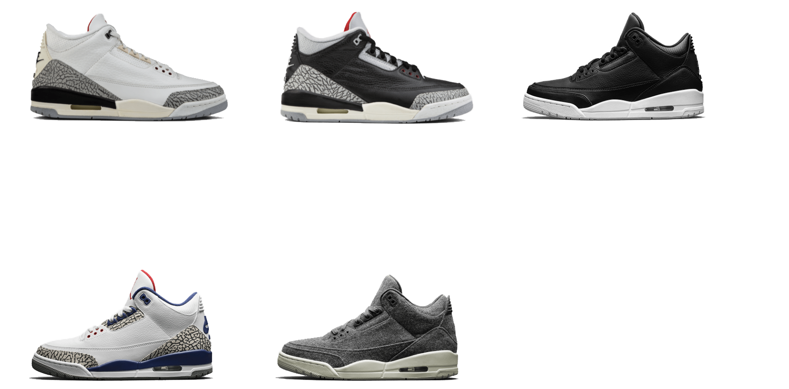

With MJ’s second slam dunk contest win, this time wearing AJ III White Cements, came an inspiring and memorable image of flight. And with it, another icon is born — the Jumpman. Here, and with the help of his MVP nomination and a certain Mars Blackmon, Michael Jordan and his sleek footwear are shuttled to fame.
What is now one of the sneaker world’s most notable silhouettes was brought to life with an architect’s keen eye. Tinker Hatfield, the auspicious name behind much of the Air Jordan franchise, was the visionary behind this classic. At the request of MJ, Hatfield developed the now iconic elephant print.




